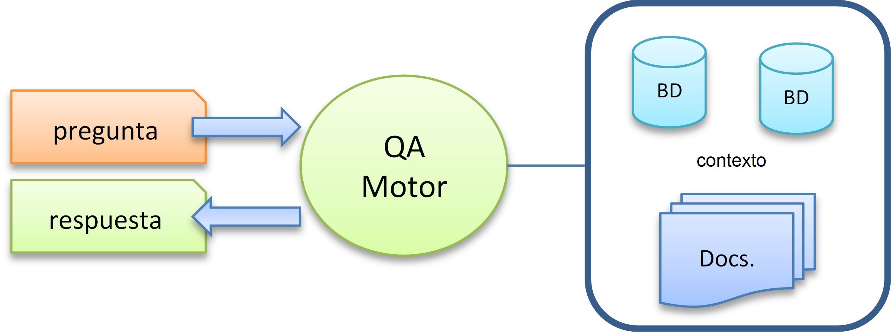

T1. Aplicaciones generales
Contents
9. T1. Aplicaciones generales#
Nota
Lee con atención el tema 1 del bloque 2. Realiza las lecturas propuestas y finalmente contesta el cuestionario que encontrarás en la sección de evaluación relativo a este tema, el cual se encuentra en el índice del bloque 2. En la clase presencial repasaremos los conceptos teóricos principales correspondoentes a la sesión. El plazo para realizar las lecturas y el cuestionario es: Apertura el 20/02/2023- Cierre 23:59 del 27/02/2023 (el día anterior a la clase presencial).
Tiempo de dedicación: 2 horas (asíncrona) + 2 horas trabajo independiente
Contenidos:
9.1. Introducción#
Existen tres grandes áreas:
NLP: Procesamiento del Lenguaje Natural
NLU: Entendimiento del Lenguaje Natural
NLG: Generación de Lenguaje Natural

Figura 1. Areas. Tomado de What are the Differences Between NLP, NLU, and NLG? por Jagreet Kaur Gill
Procesamiento del Lenguaje Natural (PLN), también conocido como Lingüística Computacional (LC), involucra la ingeniería de modelos y procesos computacionales para resolver problemas prácticos en la comprensión de los lenguajes humanos.
El PLN se puede dividir en dos amplias subáreas:
aunque a veces es difícil distinguir claramente a qué áreas pertenecen los problemas.
9.2. Áreas centrales#
Abordan problemas fundamentales como:
el modelado del lenguaje, que subraya las asociaciones de cuantificación entre palabras que ocurren naturalmente;
procesamiento morfológico, que se ocupa de la segmentación de los componentes significativos de las palabras e identifica las verdaderas partes del habla de las palabras tal como se usan;
procesamiento sintáctico, o análisis sintáctico, que construye diagramas de oraciones como posibles precursores del procesamiento semántico;
y procesamiento semántico, que intenta destilar el significado de palabras, frases y componentes de nivel superior en el texto.

Figura 2. Volumen de publicaciones sobre áreas centrales en los últimos años. Tomado de [1]
{kind=link}
Figura 3. Volumen de publicaciones sobre aplicaciones generales
Estas áreas involucran temas tales como:
Information Retrieval (Recuperación de Información)
Information Extraction (Extracción de Información)
Text Clasification (Clasificación de textos)
Text Generation (Generación de Textos)
Text Sumarization (Resúmenes de Textos)
Question Answering (Preguntas y Respuestas)
Machine Translation (Máquinas de traducción)
A menudo, es necesario uno o más de los problemas centrales con éxito y aplicar esas ideas y procedimientos para resolver problemas prácticos. Actualmente, la PLN es principalmente un campo basado en datos que utiliza cálculos estadísticos y probabilísticos junto con el aprendizaje automático.
Métodos clásicos:
Naive Bayes;
K Near Neibours (K vecinos cercanos);
Modelos Ocultos de Markov;
Conditional Ramdom Fields (campos aleatorios condicionales);
Áboles de decisión;
Ramdom Forest (bosques aleatorios) ;
y Suport Vector Machine (máquinas soporte vectorial).
DeepLearning: En los últimos años, ha habido una transformación total, y estos enfoques han sido reemplazados por completo, o al menos mejorados, por modelos neuronales y aprendizaje profundo.
9.2.1. Conferencias más relevantes#
Global:
España:
9.3. Aplicaciones#
Podríamos enmarcar las aplicaciones del PLN en seis grandes áreas que a continuación se detallan.
9.3.1. Information Retrieval (Recuperación de Información)#
9.3.1.1. Descripción#
El propósito de los sistemas de recuperación de información (IR) es ayudar a las personas a encontrar la información correcta (la más útil) en el formato correcto (más conveniente) en el momento adecuado (cuando la necesitan).
Entre muchos problemas de IR, un problema principal que debe abordarse es el de clasificar los documentos con respecto a una cadena de consulta, en términos de relevancia para tareas de recuperación ad-hoc(hecha a medida), similar a lo que sucede en un motor de búsqueda.
Las búsquedas se pueden basar en el texto completo o en otra indexación basada en contenido. La recuperación de información es la ciencia de buscar información en un documento, buscar los propios documentos y también buscar los metadatos que describen los datos y las bases de datos de textos, imágenes o sonidos.
Un sistema de IR es un sistema de software que proporciona acceso a libros, revistas y otros documentos; almacena y gestiona esos documentos.
{kind=link}
Figura 4. Arquitectura genérica de un sistema IR.
9.3.1.2. Ejemplo#
“TREC Precision Medicine / Clinical Decision Support Track”
Se nos proporciona un listado de documentos. El objetivo de esta tarea es recuperar los documentos más acordes a los temas proporcionados. Un conjunto de temas en el siguiente formato, otros tópicos que podríamos utilizar adicionalmente.
Ejemplo de entrada:
<topics task="2020 TREC Precision Medicine">
<topic number="1">
<disease>melanoma</disease>
<gene>BRAF (V600E)</gene>
<treatment>Dabrafenib</treatment>
</topic>
...
</topics>
Formato de salida:
TOPIC_NO Q0 ID RANK SCORE RUN_NAME
Ejemplo de salida:
Q0 28348404 1 0.9999 my-run; lo cual indica que la ejecución denominada my-run recupera el documento 28348404 del tema número 1 en el rango de 0-1 con una puntuación de 0,9999.
9.3.1.3. Métricas más comunes de evaluación#
Precisión
Recobrado (Cobertura, Recall)
F1 (Medida F)
Exactitud
9.3.1.4. ¿Qué otras aplicaciones específicas pensáis que pueden formar parte esta?#
!Mencione tres problemas actuales que se puedan solucionar!
9.3.1.5. Benchmarcks#
9.3.1.6. Repositorios de Código#
9.3.1.7. Conjuntos de datos#
9.3.1.8. Artículos#
9.3.2. Information Extraction (Extracción de Información)#
9.3.2.1. Descripción#
La extracción de información extrae información explícita o implícita del texto. Los resultados de los sistemas varían, pero a menudo los datos extraídos y las relaciones entre de ellos se guardan en bases de datos relacionales. No obstante, una etapa avanzada es poder almacenar esta información en estructuras y de datos semánticas. La información comúnmente extraída incluye entidades nombradas y relaciones, eventos y sus implicaciones, información temporal y tuplas de hechos.
Las actividades más comunes implicadas en la extracción de información son:
Reconocimiento de entidad nombrada (Named Entity Recognition)
Extracción de eventos (Event Extraction)
Extracción de relaciones (Relationship Extraction)
{kind=link}
Figura 5. Arquitectura genérica de un sistema IE.
9.3.2.2. Ejemplo#
El sistema debe ser capaz de:
Detectar frases claves
Clasificar las frases claves
Establecer relaciones semánticas entre las entidades siguiendo un modelo conceptual previamente proporcionado que especifica cada tipo de entidad y relación posible. Se nos proporcionan documentos de texto con contenido similares a la entrada del ejemplo siguiente:
Ejemplo de entrada:
“El asma es una enfermedad que afecta las vías respiratorias”Ejemplo de salida:
|Texto| Concepto| inicio| fin| palabra|
|T1| Concept| 3| 7|asma
|T2| Concept| 15| 25| enfermedad|
|T4| Action| 30| 36| afecta|
|T3| Concept| 41 45;46 59|vías respiratorias|
La primera columna es un identificador del elemento por orden de aparición; la segunda columna indica la clasificación de frase clave detectada; la tercera y cuarta columna se refieren a la posición de inicio y fin de la frase clave y la quinta columna indica el tipo de relación.
9.3.2.3. Métricas más comunes de evaluación#
Precisión
Recobrado (Cobertura)
F1 (Medida F)
Exactitud
9.3.2.4. ¿Qué otras aplicaciones específicas pensáis que pueden formar parte esta?#
!Mencione tres problemas actuales que se puedan solucionar!
9.3.2.5. Benchmarcks#
Papers With Code: https://paperswithcode.com/task/information-extraction
Kaggle: https://www.kaggle.com/search?q=%22information+extraction%22+in%3Acompetitions
IberLEF (Español):
eHealth-KD: https://knowledge-learning.github.io/ehealthkd-2020/
Named Entity Recognition and Relation Extraction for Portuguese: https://www.inf.pucrs.br/linatural/wordpress/iberlef-2019/
Cantemist: https://temu.bsc.es/cantemist/
9.3.2.6. Repositorios de Código#
9.3.2.7. Conjuntos de datos#
9.3.2.8. Artículos#
Papers With Code: https://paperswithcode.com/task/information-extraction
9.3.3. Text Clasification (Clasificación textual)#
9.3.3.1. Descripción#
Esta área trata la clasificación de texto o la asignación de documentos de texto libre a clases predefinidas. La clasificación de documentos tiene numerosas aplicaciones.
{kind=link}
Figura 6. Arquitectura genérica de un sistema TC. Una clasificación por texto.
{kind=link}
Figura 7. Arquitectura genérica de un sistema TC. Varias clasificaciones por texto.
Una explicación extendida sobre el agrupamiento y/o clasificación de elementos, así como los distintos métodos puede verse en el siguiente enlace: CLUSTERING1, CLUSTERING2, CLUSTERING3.
Aunque es una tarea que se viene trabajando desde hace mucho tiempo con algoritmos clásicos de máquinas de aprendizaje, Kim [2] fue el primero en utilizar vectores de palabras previamente entrenados en una Redes Neuronales Convolucionales (CNN) para la clasificación a nivel de oración. El trabajo de Kim fue motivador, y demostró que las CNN simples, con una capa convolucional seguida de una capa densa con desactivación de neuronas y salida de softmax, podían lograr excelentes resultados. Los modelos de CNN propuestos pudieron mejorar el estado del arte en 4 de las 7 tareas diferentes presentadas como clasificación de oraciones, incluido el análisis de sentimientos y la clasificación de preguntas. Conneau y col. [3] mostró más tarde que las redes que emplean un gran número de capas convolucionales funcionan bien para la clasificación de documentos.
9.3.3.2. Ejemplo:#
“Coronavirus tweets NLP - Text Classification”:
Esta trarea propone realizar clasificación de texto en los datos. Se han obtenido de comentarios de Twitter relacionados con el COVID19 y se ha realizado el etiquetado manual.
Clases posibles: Negative, Positive, Neutral, Extremely Positive, Extremely Negative
Ejemplo de entrada:
The COVID-19 coronavirus pandemic is impacting consumer shopping behavior purchase decisions and retail sales according to a First Insight study.Salida del sistema:
Neutral
9.3.3.3. Métricas más comunes de evaluación#
Precisión
Recobrado (Cobertura)
F1 (Medida F)
Exactitud
9.3.3.4. ¿Qué otras aplicaciones específicas pensáis que pueden formar parte esta?#
!Mencione tres problemas actuales que se puedan solucionar! Pensad en algún caso de múltiples clasificaciones.
9.3.3.5. Benchmarcks#
Papers With Code: https://paperswithcode.com/task/text-classification
Kaggle: https://www.kaggle.com/search?q=text+classification+in%3Acompetitions
IberLEF (spanish):
9.3.3.6. Repositorios de Código#
9.3.3.7. Conjuntos de datos#
9.3.3.8. Artículos#
Papers With Code: https://paperswithcode.com/task/text-classification
9.3.4. Natural Language Generation (NLG, Generación de lenguaje natural)#
9.3.4.1. Descripción#
Muchas tareas de PLN requieren de la generación de un lenguaje (GLN) similar al humano. El resumen y la traducción automática convierten un texto en otro de una manera secuencia a secuencia (seq2seq). Otras tareas, como los subtítulos automáticos de imágenes y videos y los informes meteorológicos y deportivos, convierten datos no textuales en texto. Algunas tareas, sin embargo, producen texto sin ningún dato de entrada para convertir (o con pequeñas cantidades utilizadas como tema o guía) [1].
Para generar un texto, un sistema debe escoger cierta información de la base de conocimiento, decidir cómo organizarla, y determinar cómo producir el texto en lenguaje natural, lo cual incluye el decidir acerca de la entrada del léxico y de las estructuras sintácticas.
Esto hace que el proceso de generación se divida en dos partes:
una componente de planificación del texto y
una componente de generación propiamente dicha.
Elección de léxico
Recursos gramaticales
Morfología
Ésta a su vez se divide en dos tareas:
la de escoger los objetos del léxico y
la de efectuar selecciones gramaticales. En todo esto se trata de escoger apropiadamente para expresar lo mejor posible el significado deseado.
Entre las tareas del GLN se encuentran:
la Traducción Automática (Machine Translation)
La Generación de Resúmenes (Text Sumarisation)
la Respuesta a Preguntas (Question Answering)
Arquitectura general del GNL donde el requisito es generar una salida textual utilizando alguna entrada textual no estructurada se conoce como T2T GLN y cuando la entrada es estructurada sería D2T GNL.
{kind=link}
Figura 8. Arquitectura genérica de un sistema de GLN, ya sea Texto a Texto o Dato a Texto, a partir tomando información desde texto o desde bases de información y conocimiento.
9.3.4.2. Ejemplos de texto a texto#
Tomado de https://towardsdatascience.com/simple-text-generation-d1c93f43f340
9.3.4.2.1. Ejemplo 1#
Ejemplo de entrada:
"First of all I dismembered the corpse."Ejemplo de salida:
"first of all i dismembered the corpse which is profound since in the first place he appeared at first so suddenly as any matter no answer was impossible to find my sake he now happened to be sure it was he suspected or caution or gods and some voice held forth upon view the conditions"
Tomado de: texto a texto https://unipython.com/generacion-de-textos-con-inteligencia-artificial/
9.3.4.2.2. Ejemplo 2#
Ejemplo de entrada:
" rmanos que sería bueno que se pusieran a construir sus propias casas para estar protegidos. a los ot"Ejemplo de salida:
"dos les pareció una buena idea, y se pusieron manos a la obra, cada uno construyó su casita. - la mía será de paja - dijo el más pequeño-, la paja es blanda y se puede sujetar con facilidad. terminaré muy pronto y podré ir a jugar. el hermano mediano decidió que su casa sería de madera: - puedo encontrar un montón de madera por los alrededores - explicó...".
9.3.4.3. Generación de Datos a Texto (D2T GLN)#
La generación de datos a texto (D2T NLG) se puede describir como generación de lenguaje natural a partir de entrada estructurada. El requisito es generar una salida textual de la entrada proporcionada en un formato estructurado como: tablas; o gráficos de conocimiento; XML o JSON. Referencias relacionadas:
Generación de texto desde datos: http://nlpprogress.com/english/data_to_text_generation.html
{kind=link}
Figura 9. Arquitectura genérica de un sistema de GLN tomando como fuente datos estructurados. Tomado de https://paperswithcode.com/task/table-to-text-generation
9.3.4.4. Métricas más comunes de evaluación#
Selección de contenido: precisión (P%) y recobrado (R%) de relaciones únicas extraídas del texto generado que también se extraen del texto de referencia. Esto mide qué tan bien el documento generado coincide con el documento de referencia.
Generación de relaciones: precisión (P%) y número de relaciones únicas (#) extraídas del texto generado que también aparecen en la entrada estructurada proporcionada. Esto mide qué tan bien el sistema es capaz de generar texto que contiene registros fácticos (es decir, correctos).
Orden de contenido: Distancia Damerau-Levenshtein normalizada (% DLD) entre las secuencias de registros extraídas del texto de referencia y las extraídas del texto generado. Esto mide qué tan bien el sistema ordena los registros que elige discutir.
Otras métricas:
ROUGE: ROUGE-1, ROUGE-2, ROUGE-3, ROUGE-4, ROUGE-L, ROUGE-SU4, … [5]
BLEU[6]
9.3.4.5. ¿Qué otras aplicaciones específicas pensáis que pueden formar parte esta?#
!Mencione tres problemas actuales que se puedan solucionar!
9.3.4.6. Benchmarcks#
Papers With Code: https://paperswithcode.com/task/text-generation
NLP Progress: http://nlpprogress.com/english/data_to_text_generation.html
9.3.4.7. Repositorios de Código#
9.3.4.8. Conjuntos de datos#
9.3.4.9. Artículos#
Papers With Code: https://paperswithcode.com/task/text-generation
9.3.5. Text Sumarisation (Generación de resúmenes)#
9.3.5.1. Descripción#
El resumen automático es la tarea de producir una versión más corta de uno o varios documentos que conserve la mayor parte del significado del documento original.
{kind=link}
Figura 10. Arquitectura general
La generación de resúmenes puede ser de dos tipos:
Extractiva: Los resúmenes extractivos son aquellos en su texto resultante este compuesto por fragmentos del texto original.
Abstractiva: Los resúmenes abstractivos son aquellos que en su texto resultante se generan nuevas frases representativas del contenido original.
9.3.5.2. Abstractiva#
{kind=link}
Figura 11. Tipos de resúmenes abstractivos. Tomado de https://doi.org/10.1016/j.eswa.2018.12.011
9.3.5.3. Extractiva#
{kind=link}
Figura 12. Ejemplo de resumen extractivo. Tomado de https://medium.com/@ondenyi.eric/extractive-text-summarization-techniques-with-sumy-3d3b127a0a32
9.3.5.4. Ejemplo#
Ejemplo de entrada: Documento
Ejemplo de salida: Documento reducido o resumen generado
9.3.5.5. Métricas más comunes de evaluación#
ROUGE: ROUGE-1, ROUGE-2, ROUGE-3, ROUGE-4, ROUGE-L, ROUGE-SU4, … [5]
BLEU[6]
9.3.5.6. ¿Qué otras aplicaciones específicas pensáis que pueden formar parte esta?#
!Mencione tres problemas actuales que se puedan solucionar!
9.3.5.7. Benchmarcks#
9.3.5.8. Repositorios de Código#
Papers With Code: https://paperswithcode.com/search?q_meta=&q=summarisation
9.3.5.9. Conjuntos de datos#
9.3.5.10. Artículos#
Papers With Code: https://paperswithcode.com/search?q_meta=&q=summarisation
9.3.6. Question Answering (QA, Respuestas a preguntas)#
9.3.6.1. Descripción#
Es un tipo de recuperación de la información capaz de recuperar respuestas a preguntas planteadas en lengua natural. Se encarga de buscar una información en una cantidad más o menos grande de documentos, ya que esto debe extraer de dichos documentos un fragmento de texto que responda a una pregunta dada en lenguaje natural.
Estos sistemas están muy ligados a los buscadores web. Debe considerar listas, definiciones, y preguntas del tipo cómo, cuándo, dónde, por qué, etc.
Similar al resumen y la extracción de información, la respuesta a preguntas (QA) recopila palabras, frases u oraciones relevantes de un documento. QA devuelve esta información de forma coherente en respuesta a una solicitud. Los métodos actuales se parecen a los de resumen[1][8].
{kind=link}
Figura 13. Arquitectura genérica de un sistema de QA.
9.3.6.2. Ejemplo#
Tomado de https://ai.google.com/research/NaturalQuestions/visualization
Ejemplo de entrada: Pregunta: When are hops added to the brewing process? => ES:¿ Cuándo se agregan lúpulos al proceso de elaboración?
Ejemplo de salida:
Respuesta corta:
"The boiling process"=> ES:"El proceso de ebullición"Respuesta larga:
"After mashing , the beer wort is boiled with hops ( and other flavourings if used ) in a large tank known as a " copper " or brew kettle – though historically the mash vessel was used and is still in some small breweries . The boiling process is where chemical reactions take place , including sterilization of the wort to remove unwanted bacteria , releasing of hop flavours , bitterness and aroma compounds through isomerization , stopping of enzymatic processes , precipitation of proteins , and concentration of the wort . Finally , the vapours produced during the boil volatilise off - flavours , including dimethyl sulfide precursors . The boil is conducted so that it is even and intense – a continuous " rolling boil " . The boil on average lasts between 45 and 90 minutes , depending on its intensity , the hop addition schedule , and volume of water the brewer expects to evaporate . At the end of the boil , solid particles in the hopped wort are separated out , usually in a vessel called a " whirlpool ".
9.3.6.3. Métricas más comunes de evaluación#
Precisión
Recobrado (Recall)
F1
BLEU
ROUGE-L
METEOR
EM (Exact Match): Coincidencia exacta con el valor esperado
Ver otros [8]
9.3.6.4. ¿Qué otras aplicaciones específicas pensáis que pueden formar parte esta?#
!Mencione tres problemas actuales que se puedan solucionar!
9.3.6.5. Benchmarcks#
9.3.6.6. Repositorios de Código#
9.3.6.7. Conjuntos de datos#
9.3.6.8. Artículos#
Papers With Code: https://paperswithcode.com/task/question-answering
9.3.7. Machine Translation#
9.3.7.1. Descripción#
La traducción automática (MT) es la aplicación por excelencia del PLN. Implica el uso de técnicas matemáticas y algorítmicas para traducir documentos de un idioma a otro. Realizar una traducción eficaz es intrínsecamente complejo incluso para los humanos, y requiere competencia en áreas como morfología, sintaxis y semántica, así como una comprensión y un discernimiento expertos de las sensibilidades culturales, tanto para los idiomas (y sociedades asociadas) en consideración [7].
9.3.7.2. Traducción automática basada en reglas#
Consiste en realizar transformaciones a partir del original, reemplazando las palabras por su equivalente más apropiado. Al conjunto de este tipo de transformaciones del texto original se le llama predicción de textos.
Tipos de traductores basados en reglas:
Directos (traducción automática basada en diccionarios) los cuales asignan la entrada a la salida con reglas básicas.
De transferencia (traducción automática basada en transferencia) emplean análisis morfológico y sintáctico.
Interlingüísticos (Interlingua) utilizan un significado abstracto.
Como mínimo, para obtener una traducción de un idioma A hacia un idioma B, se necesita:
Un diccionario que asignará cada palabra en A a una palabra B adecuada.
Reglas que representan la estructura regular de las oraciones en A.
Reglas que representan la estructura regular de las oraciones en B.
9.3.7.3. Traducción automática basada en corpus#
La traducción automática a partir de un corpus lingüístico se basa en el análisis de muestras reales con sus respectivas traducciones. Entre los mecanismos que utilizan corpus se incluyen los métodos estadísticos y los basados en ejemplos.
Estadística: El objetivo de la traducción automática estadística es generar traducciones a partir de métodos estadísticos basados en corpus de textos bilingües, como por ejemplo las actas del parlamento europeo, que se encuentran traducidas en todos los idiomas oficiales de la UE. A medida que se generan y se analizan corpus de textos multilingües, se mejoran iterativamente los resultados al traducir textos de ámbitos similares.
Basada en ejemplos: La traducción automática basada en ejemplos se caracteriza por el uso de un corpus bilingüe como principal fuente de conocimiento en tiempo real. Es esencialmente una traducción por analogía (relación de semejanza) y puede ser interpretada como una implementación del razonamiento por casos base empleado en el aprendizaje automático, que consiste en la resolución de un problema basándose en la solución de problemas similares.
9.3.7.4. Traducción automática basada en el contexto#
La traducción automática basada en el contexto utiliza técnicas basadas en hallar la mejor traducción para una palabra fijándose en el resto de palabras que la rodean.
Básicamente este método se basa en tratar el texto en unidades de entre 4 y 8 palabras, de manera que se traduce cada una de ellas por su traducción al idioma destino, y se eliminan las traducciones que han generado una “frase” sin sentido. Luego, se mueve la ventana una posición (palabra), retraduciendo la mayoría de ellas de nuevo y volviendo a filtrar dejando solo las frases coherentes. Se repite dicho paso para todo el texto. Y luego se pasa a concatenar los resultados de dichas ventanas de manera que se logre una única traducción del texto.
El filtrado que se realiza donde se decide si es una frase con sentido utiliza un corpus del lenguaje destino, donde se cuentan el número de apariciones de la frase buscada. Se trata, por tanto, de un método basado en ideas bastante simples que ofrecen muy buenos resultados en comparación a otros métodos.
Como ventajas, aporta también la facilidad de añadir nuevas lenguas, ya que solo se necesita:
un buen diccionario, que puede ser cualquier versión comercial adaptada mediante reglas gramaticales para tener los verbos conjugados y los nombres/adjetivos con sus variaciones en número y género, y
un corpus en el lenguaje destino, que se puede sacar por ejemplo de Internet, sin que sea necesario traducir ninguna parte, como en los métodos estadísticos.
9.3.7.5. Redes neuronales. Codificador-Decodificador#
Entre las técnicas más actuales utilizadas en este ámbito está el uso de Redes Neuronales profundas y como parte de esto el uso de codificadores (encoders) y decodificadores (decoders). Una red neuronal (el codificador) procesa una oración de la fuente original para otra red (el decodificador). La segunda red neuronal predice las palabras en el lenguaje del destino.
{kind=link}
Figura 15. Representación del modelo de codificador-decodificador (Inglés-Alemán). Tomado de https://github.com/shangeth/Seq2Seq-Machine-Translation
9.3.7.6. Ejemplo (Español- Ingles)#
Ejemplo de entrada: (Español)
"Carlos llamó a su amigo por teléfono"Ejemplo de salida: (Inglés)
"Carlos called his friend on the phone"
9.3.7.7. Métricas más comunes de evaluación#
BLEU: La calidad de las traducciones se evalúa con la BLEU Metric (BiLingual Evaluation Understudy). La evaluación se basa en la idea de que cuanto más se parece la traducción a una realizada por lingüistas profesionales, mejor es. Se evalúa sobre 1, considerándose que la puntuación de un traductor humano está entre el 0.7 y el 0.85.
9.3.7.8. ¿Qué otras aplicaciones específicas pensáis que pueden formar parte esta?#
!Mencione tres problemas actuales que se puedan solucionar!
9.3.7.9. Benchmarcks#
9.3.7.10. Repositorios de Código#
9.3.7.11. Conjuntos de datos#
9.3.7.12. Artículos#
Papers With Code: https://paperswithcode.com/task/machine-translation
9.4. Bibliografía#
[1] Otter, D. W., Medina, J. R., & Kalita, J. K. (2020). A survey of the usages of deep learning for natural language processing. IEEE Transactions on Neural Networks and Learning Systems.
[2] Y. Kim, “Convolutional neural networks for sentence classification,” arXiv preprint arXiv:1408.5882, 2014.
[3] A. Conneau, H. Schwenk, L. Barrault, and Y. Lecun, “Very deep convolutional networks for text classification,” in European ACL, vol. 1, 2017, pp. 1107–1116.
[4] N. Moratanch and S. Chitrakala, “A survey on abstractive text summarization,” 2016 International Conference on Circuit, Power and Computing Technologies (ICCPCT), Nagercoil, 2016, pp. 1-7, doi: 10.1109/ICCPCT.2016.7530193.
[5] Lin, Chin-Yew. 2004. ROUGE: a Package for Automatic Evaluation of Summaries. In Proceedings of the Workshop on Text Summarization Branches Out (WAS 2004), Barcelona, Spain, July 25 - 26, 2004.
[6] Dreyer, Markus (2012). “HyTER: Meaning-Equivalent Semantics for Translation Evaluation”. Proc. 2012 NAACL: HLT: 162–171. Retrieved 22 January 2015.
[7] D. Jurafsky and J. Martin, Speech & language processing. Pearson Education, 2000.